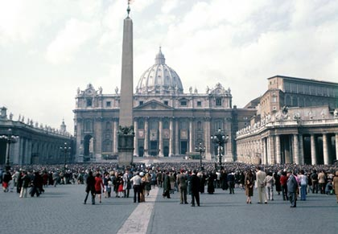

Cos'è la Notte Bianca?
La Notte Bianca è una notte molto speciale. È una grande festa quando la città rimane sveglia tutta la notte. Quest'iniziativa ha cominciato a Roma nel 2003. Ha luogo nel mese di settembre, di solito il primo o il secondo sabato. È un fenomeno culturale! Dà alla città una straordinaria carica di energia.
È una notte culturale con decine di eventi programmati per la manifestazione. Le categorie per genere includono l'arte, la musica, il teatro, il cinema, le attività per i bambini, lo sport e lo shopping.
Le attività vengono svolte per le strade, piazze, monumenti, ville, musei, luoghi d'arte, teatri e negozi.
La Notte Bianca incomincia alle ore 21:00 nella piazza del Campidoglio e continua fino al mattino seguente.
